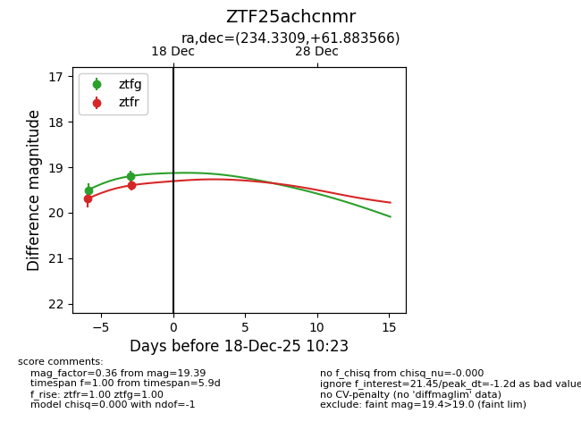
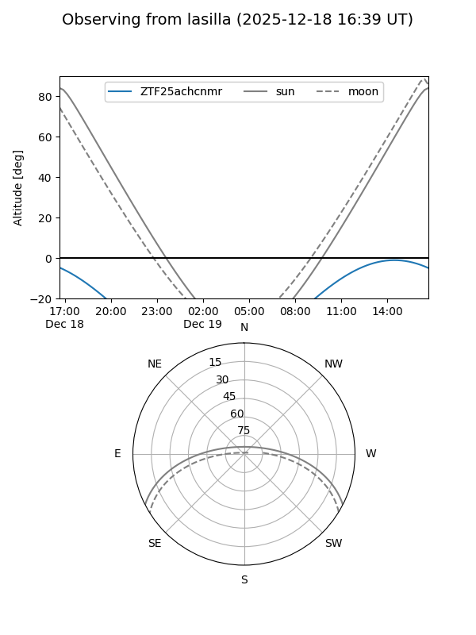
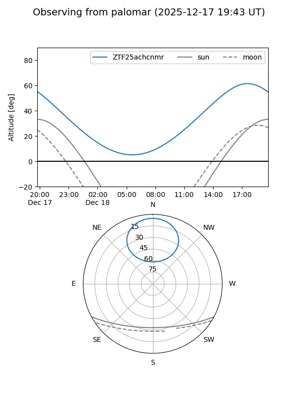

ZTF25achcnmr
Target ZTF25achcnmr at 2025-12-18 11:18
Aliases and brokers:
FINK: fink-portal.org/ZTF25achcnmr
Lasair: lasair-ztf.lsst.ac.uk/objects/ZTF25achcnmr
ALeRCE: alerce.online/object/ZTF25achcnmr
alt names
ZTF25achcnmr (ztf,fink_ztf)
Coordinates:
equatorial (ra, dec) = 234.3309,+61.88357
equatorial (HMS+DMS) = 15:37:19.43,+61:53:00.84
galactic (l, b) = (96.3581,+45.76129)
Photometry
last ztfg=19.19, ztfr=19.39
2 ztfg, 2 ztfr detections
Lightcurve

Visibility


Additional plots